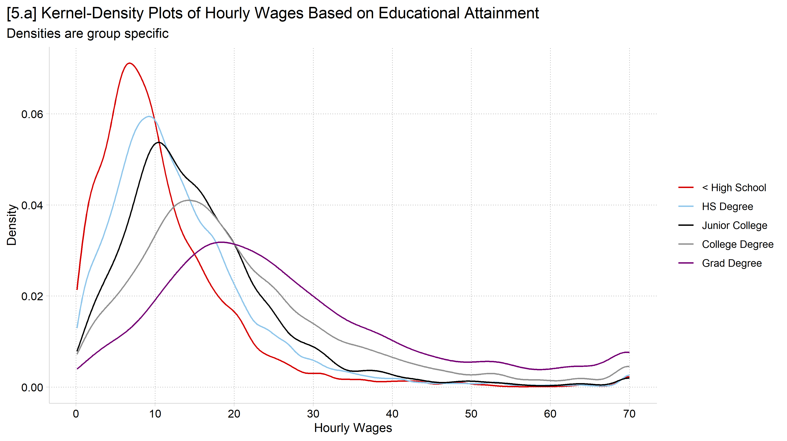

library(foreign) # load Stata datasets
library(ggplot2) # main graphics package
library(dplyr) # data manipulation tools
library(cleanplots) # Mize's graphics scheme
## Use cleanplots colors, markers, lines, and theme for all graphs ##
cleanplots_defaults()
theme_update(plot.title.position = "plot") # titles start at left edge of graph
# General Social Survey Data
gss <- droplevels(read.dta("https://tdmize.github.io/data/data/gss.dta"))
# 5.a - Overlay multiple densities for different groups
ggplot(filter(gss, !is.na(degree)), aes(x = wages, color = degree)) +
geom_density(key_glyph = "path") +
labs(x = "Hourly Wages", y = "Density", color = "",
title = "[5.a] Kernel-Density Plots of Hourly Wages Based on Educational Attainment",
subtitle = "Densities are group specific") +
scale_color_cleanplots(labels = c("< High School", "HS Degree", "Junior College",
"College Degree", "Grad Degree")) +
scale_x_continuous(breaks = seq(0, 70, 10))